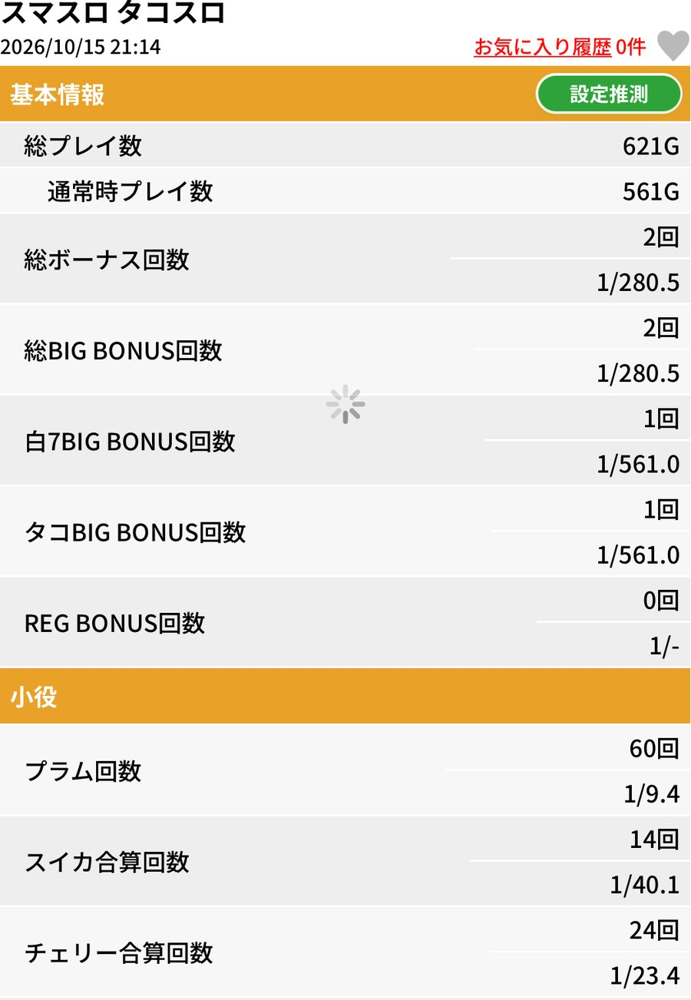
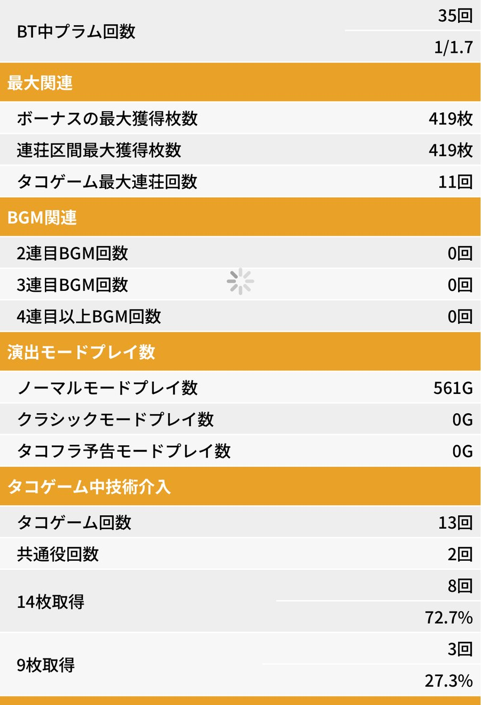
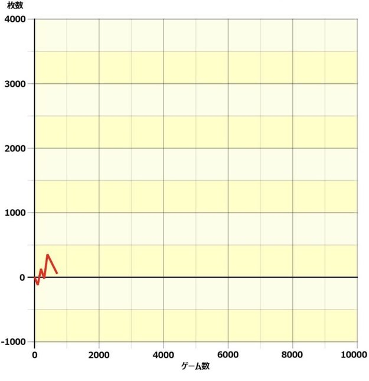
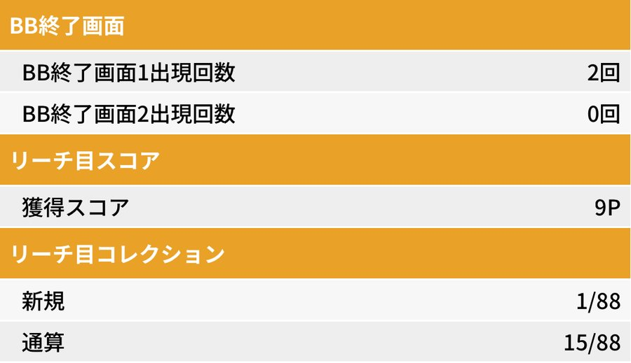

機種別実戦記録
タコスロ実戦｜通常561Gで＋51枚。今日も今日とて、勝ち逃げです
2026年10月15日のタコスロ実戦。投資150枚・回収201枚で＋51枚。通常561GでBIG2回・REG0回、14枚取得は8/11回、72.7％でした。
投資150枚・回収201枚で、＋51枚
今日もタコスロへ。2026年10月15日は通常561GでBIG2回を引き、＋51枚で終了しました。時間を見て勝ち逃げした一方、2コマ目押しには悔しさも残る実戦です。
| 項目 | 結果 |
|---|---|
| 投資 | 150枚 |
| 回収 | 201枚 |
| 差枚 | ＋51枚 |
| 総プレイ数 | 621G |
| 通常時プレイ数 | 561G |
投資・回収は本人申告。差枚は201−150で計算しています。ボーナス獲得枚数やグラフ終点を読み取った値とは別の集計です。
通常561GでBIG2回・REG0回
BIGは白7とタコBIGが1回ずつ。REGは0回で、ボーナスは計2回でした。表示確率の分母は総621Gではなく、通常561Gです。
| 項目 | 結果 |
|---|---|
| ボーナス合計 | 2回／1/280.5 |
| BIG合計 | 2回／1/280.5 |
| 白7BIG | 1回／1/561.0 |
| タコBIG | 1回／1/561.0 |
| REG | 0回（確率表示なし） |

タップして拡大 ↗14枚取得は8/11回、72.7％
タコゲーム13回のうち共通役が2回。14枚取得8回・9枚取得3回で、取得率の分母は計11回です。8÷11×100を小数1桁に丸めると、表示の72.7％と一致します。
| 項目 | 結果 |
|---|---|
| タコゲーム | 13回 |
| 共通役 | 2回 |
| 14枚取得 | 8回／72.7％ |
| 9枚取得 | 3回／27.3％ |
| タコゲーム最大連荘 | 11回 |
タコゲーム最大連荘11回は、ボーナスが11連したという意味ではありません。

タップして拡大 ↗グラフはプラス域で終了
途中でマイナス域へ下がる場面もあり、終点はプラス域。グラフの目盛りから正確な収支を読み取ったものではなく、最終差枚は投資・回収記録による＋51枚です。

タップして拡大 ↗小役・終了画面などの詳細
小役・最大獲得・モード・終了画面を見る
| 項目 | 結果 |
|---|---|
| プラム | 60回／1/9.4 |
| スイカ合算 | 14回／1/40.1 |
| チェリー合算 | 24回／1/23.4 |
| BT中プラム | 35回／1/1.7 |
| ボーナス最大獲得 | 419枚 |
| 連荘区間最大獲得 | 419枚 |
| ノーマルモード | 561G |
| クラシックモード／タコフラ予告モード | 各0G |
| 2連目／3連目／4連目以上BGM | 各0回 |
| BB終了画面1／画面2 | 2回／0回 |
| リーチ目スコア | 9P |
| リーチ目コレクション（新規） | 1/88 |
| リーチ目コレクション（通算） | 15/88 |

タップして拡大 ↗短い実戦でも、楽しさと目押しの反省を残す
収支はプラスで終了。目押しについては、本人から油断と疲れがあったとの振り返りがありました。楽しさや次に打ちたい気持ちは、下のコメントにそのまま残しています。
通常561Gの結果だけで設定の高低は判断しません。終了画面番号の意味や設定別の確率との比較も、今回の記録からは推定していません。
記録の出どころ
投資150枚・回収201枚と所感はシュウ３の申告。ゲーム数・ボーナス・小役・技術介入・終了画面等は、2026年10月15日分のユニメモ画像4枚で確認しています。当選順序、開始時刻、店舗、貸出・交換条件は未確認のため補っていません。